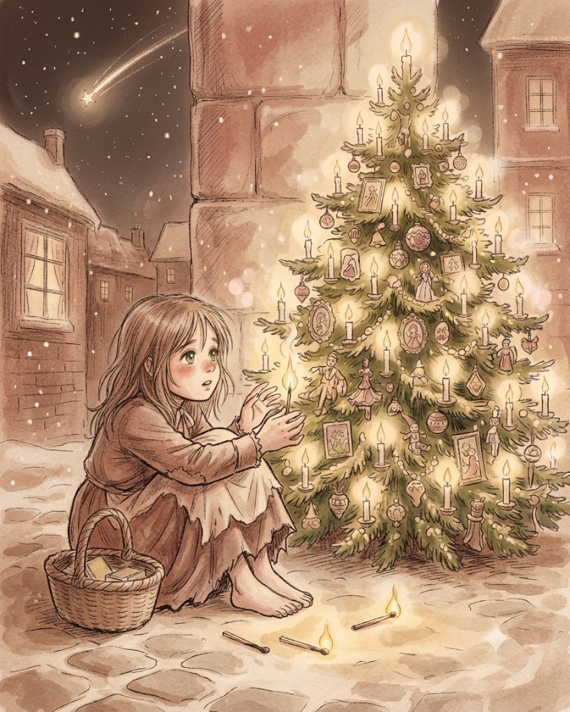
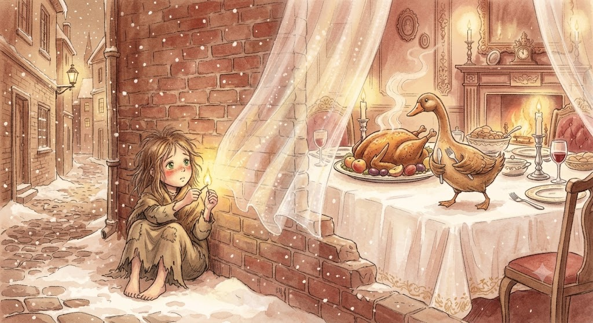

소녀는 성냥을 하나 더 벽에 그었다. 성냥은 밝게 타올랐다. 불빛이 벽을 비추자, 하늘하늘한 막처럼 투명해져서 방 안을 훤히 들여다볼 수가 있었다. 탁자에 눈처럼 하얀 식탁보가 덮여있고, 그 위에 찬란하게 빛나는 저녁 식사가 차려있다. 사과와 자두로 속을 채워 구운 거위에서 먹음직스럽게 김이 모락모락 피어올랐다. 더군다나 그 거위가 접시에서 펄쩍 뛰어내려 칼과 포크를 가슴에 품고 이 어린 소녀에게 곧장 걸어왔다. 문득 성냥이 꺼졌다. 두껍고 차가운 벽만 보일뿐이었다. 성냥 하나를 더 밝혔다. 문득 소녀가 몹시도 아름다운 크리스마스트리 아래 앉아 있다. 작년 크리스마스에 부자 상인의 집 유리문을 통해 본 것보다 훨씬 더 아름다웠다. 수천 개의 초가 초록 나뭇가지 위에서 활활 타오르고 판화 가게에 있는 것과 같은 알록달록한 그림이 소녀를 내려다보았다. 어린 소녀는 두 손을 내밀었다. 문득 성냥이 꺼졌다. 크리스마스 불빛은 더 높이 올라갔다. 불빛은 이제 하늘에 환한 별처럼 보였다. 별 하나가 길게 줄을 이루며 떨어져 내렸다. 소녀는 생각했다. '지금 누군가가 저세상으로 가고 있구나.' 지금은 저세상으로 간, 누구보다 소녀를 사랑했던 할머니는 별이 떨어져 내리면 영혼 하나가 하늘로 올라간 것이라고 말해 주었다.